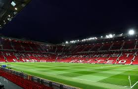

<html></html>
<head>
<title>Manchester united</title>
<body>
<h1>History</h1>
<p>Manchester United is a football club that is based in Old Trafford, Greater Manchester. The team competes in the Premier league, which is the top flight of English football. Manchester United are also nicknamed the Red devils. United's home stadium is Old Trafford and they shifted to this stadium in 1910. Manchester United have one more trophies than any other team that plays in England. Manchester United is one of the most widely supported teams in the world. In 2016-17 United was the highest earning team in the world with an annual revenue of 676.3 million euros. They were also the third most valuable team in the world in 2019, valued at 3.15 billion euros. The Glazer family has the major ownership and control over the team after being purchased by Malcom Glazer for 800 million euros in 2005.


Manchester United are the biggest and most accomplished team in english football and one of the most accomplished worldwide. As mentioned in the introduction they have won more trophies than any other team in english football. They have won a record 20 league titles, 12 fa cups, 5 league cups, and a record 21 community shields. They have also won 3 UEFA champions leagues, 1 UEFA europa league, one UEFA cup winners cup,one intercontinental cup and one club world cup. In the 1989-99 season they became the first english team in football history to win the continental european treble and by winning the UEFA europa league in  20016-17 they became one of five teams to have won all 3 main european competitions. 
</p>


</body>

</head>